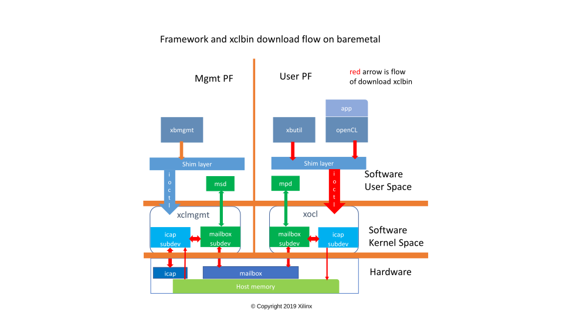
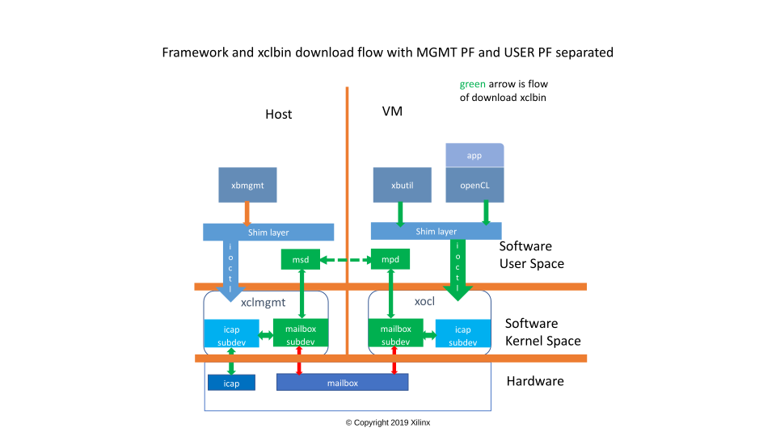
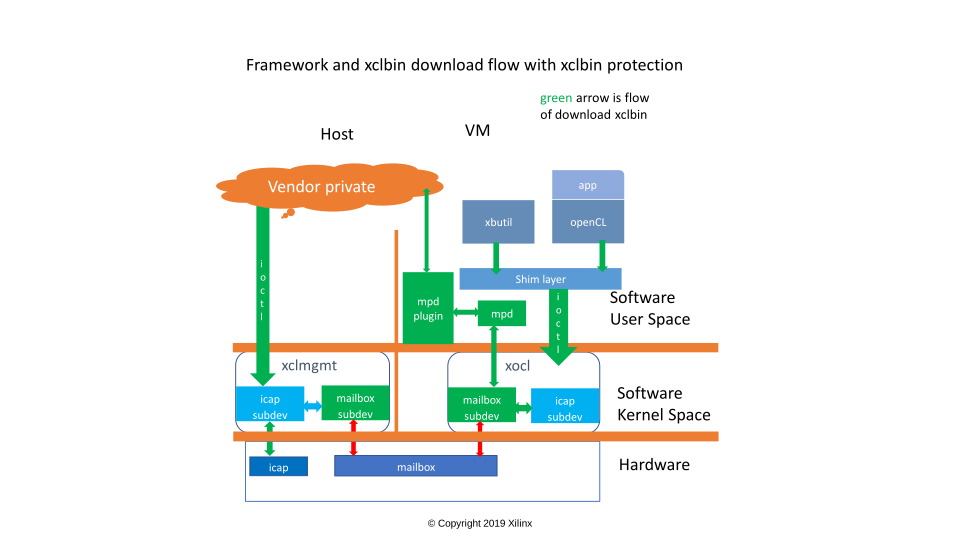
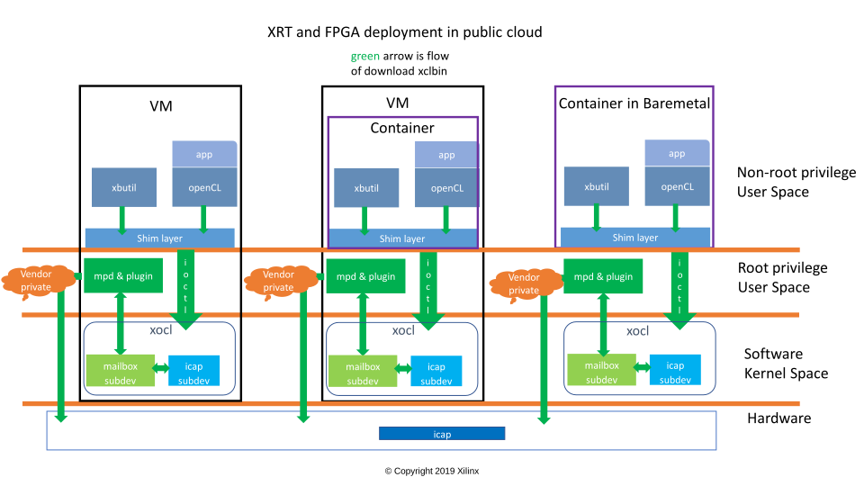

MSD/MPD and Plugins¶
Overview¶
When FPGAs are deployed at cloud vendors, either VM based (IaaS) or container based (PaaS), there are some common concerns need to be addressed.
MGMT PF and USER PF of the FPGA are separated
Cloud vendors own the MGMT PF, while users own the USER PF. Any operations by the user on USER PF should not damage or compromise the operation of MGMT PF.
xclbin files needs to be protected
Some of the xclbin files are provided by third-party ISVs – they don’t want the users access their xclbin files, but use them indirectly. That is, the xclbin files in user VM or container are not the real ones that are running on the cards. Instead, they are fake one with the BITSTREAM section stripped. xclbin download on the fake xclbin files in VM should result in the real one being programed without any user perceiving
Cloud vendors have more control on the xclbin download process
Download xclbin involves the talking between VMs or containers and the hosts. Cloud vendors have their own ways they trust to do this.
XRT addresses all of these concerns
Mailbox, Message Service Daemon(MSD) and Message Proxy Daemon(MPD)¶
The following picture illustrates how a xclbin file is downloaded on baremetal machine

As shown by the red arrows in the picture, the flow of the download in this case is as following:
User requests xclbin download from ‘xrt-smi program’ cmdline or OpenCL API
Shim layer issues ioctl to xocl driver
Xocl driver subdev icap sends the req to subdev mailbox (the xclbin file is in host memory, the req size is very small)
Mailbox transfers the req to the peer in xclmgmt through hw mailbox
Xclmgmt driver subdev mailbox forwards the req to the subdev icap
Xclmgmt driver subdev icap receives the req, gets xclbin file from memory, and programs the icap
Response is sent back to the user following the reverse way
Note: This model also works for containers running on top of baremetal if no special requirement, ie, xclbin protection, is needed
XRT has its xclmgmt and xocl driver separated. Mailbox is communication channel between the 2 drivers, with which the user can do some management works with USER PF in VM, ie. download xclbin. However, HW mailbox by design has very low bandwidth, and that makes transfer of a hundred Mega Byte xclbin file very slow. SW mailbox is the complementary to the mailbox framework to overcome this, and it also helps as well for cases where there are no working HW mailbox
SW mailbox relies on MSD/MPD. MSD resides in userspace of the machine(ie. Host) where xclmgmt driver is installed, while MPD resides in userspace of the machine(ie. VM) where xocl driver is installed. They talk to the mailbox subdev in the corresponding driver. MSD/MPD may be connected through external networking, eg. Ethernet, and make the download xclbin faster
Note: In order to use SW mailbox, the cloud vendor has to setup the networking connection between Host and VM. And this model provides a faster xclbin download, but doesn’t provide xclbin protection
Once the networking connection is setup, the following configurations are also required
# In host, make sure the IP address configured is the one VM talks to
Host>$ sudo xbmgmt config --show
# If the IP address is not correct, change it by running
Host>$ sudo xbmgmt config --daemon --host <host-or-ip>
# Start MSD in host
Host>$ sudo systemctl start msd
# Start MPD in VM
VM>$ sudo systemctl start mpd
#Enable these services If you want them to be in active even after reboot
Host>$ sudo systemctl enable msd
VM>$ sudo systemctl enable mpd
The flow of downloading xclbin through SW mailbox and MSD/MPD is illustrated as below:

As shown by the green arrows in the picture, the flow of the download in this case is as following:
User requests xclbin download from ‘xrt-smi program’ cmdline or OpenCL API
Shim layer issues ioctl to xocl driver
Xocl driver subdev icap sends the req to subdev mailbox
Mailbox transfers the req and xclbin file to MPD as mailbox message
MPD forwards the mailbox message to MSD
MSD transfers the mailbox message to xclmgmt driver subdev mailbox
Xclmgmt driver subdev mailbox forwards the req to the subdev icap
Xclmgmt driver subdev icap receives the req, and programs the icap
Response is sent back to the user following the reverse way
The mailbox(HW&SW) and MSD/MPD framework perfectly addresses the 1st concern mentioned above
Enhancement to MPD¶
MSD/MPD are mailbox message centric. They focus on the delivering of the mailbox message and don’t interpret them. In order to protect the xclbin file, in which case users feed fake xclbin files to xocl then plugins get real ones and re-feed to xclmgmt, MSD/MPD have to interpret and understand the download xclbin message. An enhancement to MPD interprets the mailbox message and calls into vendor specific plugin to download the xclbin
The input to the plugin is the xclbin file fed by the user in VM or container – it may be a fake xclbin file. The plugin calls cloud vendor specific APIs to do the real download. It is the cloud vendor responsibility to,
Save the real xclbin files in a dedicated database
Retrieve the real xclbin from fake one
Ascertain the legality of the download itself
Talk to the MGMT PF (xclmgmt driver) to download the real xclbin
Note: In this model, the cloud vendor APIs don’t know anything about mailbox. They talk to ICAP through ioctl directly. So MSD is not being used
The flow of downloading protected xclbin through plugin is illustrated as below:

The vendor private part shown in the picture needs to,
Provide database to save real xclbin files
Provide download API to MPD plugin
- Check the legality of the download
whether the user is authorized
whether the xclbin is valid
whether the FPGA owned by the user
etc
Retrieve the real xclbin
Download the retrieved xclbin
The enhancement to the MPD and the plugin address the 2nd and 3rd concerns mentioned above
Example MPD plugin¶
The example plugin aims at containers running on top of baremetal machines. In this case, both MGMT PF and USER PF are in the same domain, so plugin can call ioctl on xclmgmt directly to program ICAP after it retrieves the real xclbin. This is the use case for Nimbix
The plugin is built as shared object – libcontainer_mpd_plugin.so, and when users install the container pkg, the ‘so’ file will be installed at /opt/xilinx/xrt/lib, and a soft link file – libmpd_plugin.so is created under the same folder linking to the plugin shared object. MPD tries to dlopen(3) the shared object when it gets started
This delivered container plugin by default just uses the input xclbin file as output(that means no xclbin protection), show-casing how this plugin is going to be implemented. It does have example code how to save real xclbin, how to retrieve real xclbin from fake one, and how to download a protected xclbin, as user’s reference
This plugin can also be used for internal test on the MPD and mailbox
Example how a ubuntu host of containers configures the plugin
# install xrt pkg
$ sudo apt install /opt/xrt_201920.2.3.0_18.04-xrt.deb
# install xrt pkg
$ sudo apt install /opt/xrt_201920.2.3.0_18.04-container.deb
# config mailbox channel switch
# this has to be manually configurated to ensure download xclbin going through SW mailbox
$ sudo echo 0x100 > /sys/bus/pci/devices/0000\:65\:00.0/config_mailbox_channel_switch
# When cloud vendor (eg. Nimbix) wants to enable its own xclbin protection mechanism, this
# plugin needs to be rebuilt and the built 'so' needs to be copied to /opt/xilinx/xrt/lib
# eg
$ sudo cp libcontainer_mpd_plugin.so /opt/xilinx/xrt/lib
$ sudo systemctl restart mpd
Summary¶
With the MSD/MPD framework and MPD enhancement,
Same XRT pkg is installed everywhere, baremetal/IaaS/PaaS/etc. Vendors only need to create/install their specific plugins
Users have same Xilinx® FPGA using experience everywhere – they don’t even know whether they are running within baremetal, VM, or containers, they don’t know whether the xclbin files they see are real one, fake one or any other kind either
The following picture illustrates how XRT is being deployed in different scenarios at cloud vendors

Special Case¶
There is special case where download xclbin from within user VM is not required.
In this special case, neither MSD/MPD nor plugins are required since no xclbin download is allowed from guest. xclbins can be preloaded either by hypervisor or dom0 type VM where the mgmt PF is assigned. The apps in user VM run without any change, i.e. xclbin download ioctl is still issued to xocl driver, xocl driver gets the uuid of the preloaded xclbin with a XCL_MAILBOX_REQ_PEER_DATA mailbox opcode to xclmgmt, and if the uuid matches with that of the xclbin requested for download, the ioctl returns immediately with success. If the uuids don’t match, download request in the guest fails. download happening.
Note¶
There are some machine configurations which prevents TCP connections. User should update the configurations to allow TCP connections. One of the configs is “Firwall” Settings to enable or disable: 1. firewall disable command: ufw disable 2. firewall enable command: ufw enable